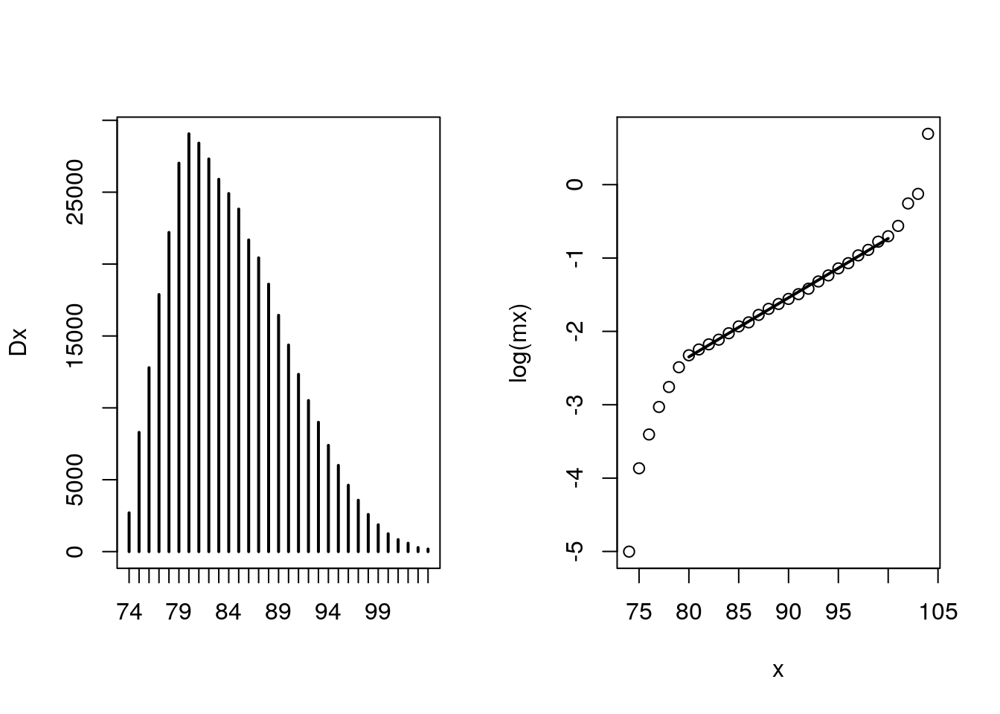
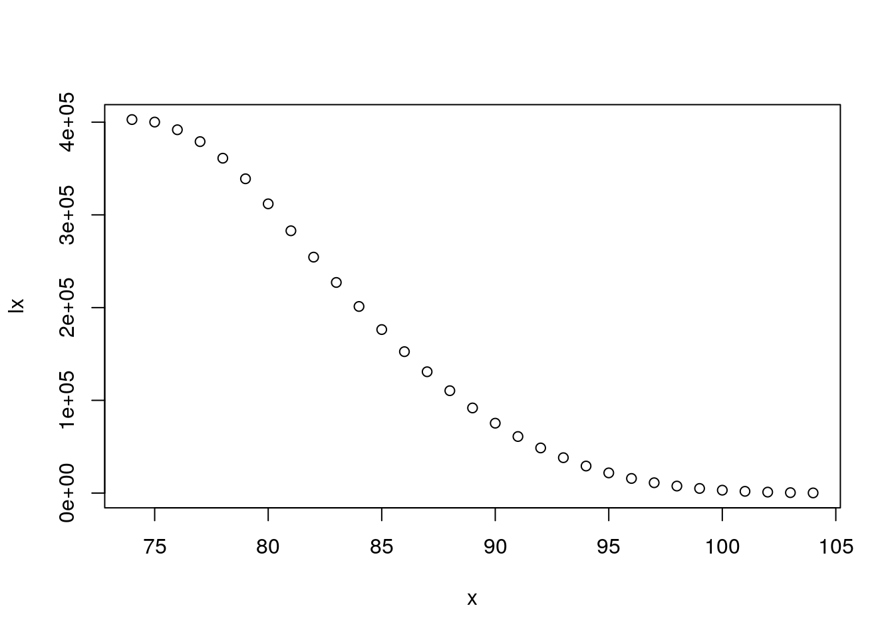
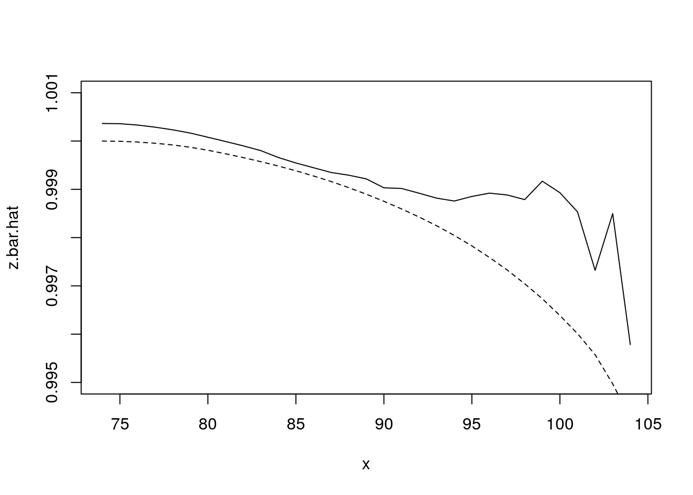

Chapter 4 Gamma Frailty with Applications
4.1 From pop survival to pop hazards
We have \[ \bar S(x) = {1 \over \left(1 + \sigma^2 H_0(x)\right)^{1/ \sigma^2}} \]
Let’s compute \(\bar\mu(x)\).
\[ \bar\mu(x) = {\mu_0 \over 1 + \sigma^2 H_0(x)} \]
4.1.1 What happens to frailty of survivors?
Recall that pop hazards = baseline \(\times \bar{z}(x)\).
So, \[ \bar\mu(x) = \mu_0(x) { 1 \over 1 + \sigma^2 H_0(x)} \] Sketch \(\bar{z}(x)\). Hint: what form does \(H_0(x)\) have?
4.1.1.1 Example: Gamma-Gompertz
If \(H_0(x)\) be Gompertz, we have closed-form expression. What is it? Does \(\bar{z}\) have the form \[ {1 \over 1 + v*e^{w x}} \]This is a backwards S, going down.
sigma.sq = .2
x = 0:100
a = 5 * 10^-4
b = 1/8
H0.x = (a/b) * (exp(b*x) - 1)
bar.z = 1 / (1 + sigma.sq * H0.x)
plot(x, bar.z)
Look at the apparent exponential decline in tail Homework: what is proportional rate of change in \(\bar{z}\) as \(x\) gets big? Is it close to Gompertz \(b\)?
Average frailty in terms of survival
\[ \bar{z}(x) = [\bar{S}(x)]^{\sigma^2}! \]
In real life, we observe \(\bar{S}(x)\). So this allows us to say something about implied \(\bar{z}\) from hazards.
Reversing the logic: if we see a characteristic changing with age, then we can estimate “\({\sigma^2}\)” (I put in quotes because its the variance of the proportional effect of the observed characteristic.)
4.2 Selection and observed frailty in CenSoc
We have a large matched sample from the 1940 census to Social Security death data observed from 1975 to 2004. This means that we can compute the survival curves of extinct cohorts and see how mortality selection changes the composition of the cohort as it ages.
In this example, we use observed wage income in 1940 for the cohort born 1895 to 1900. We look at how wages of survivors increase with age as a result of selective mortality and we see if the gamma-frailty model can produce similar results.
4.2.1 Data
Read in the data and transform the variables to what we want. We produce a variable \(y\) (in this case a standardized version of log wage income) to be transformed into a frailty score.
## read in dat
library(data.table)
dt <- fread("/data/josh/CenSoc/censoc_bfdw.csv")
## Clean wage data
dt[, incwage := INCWAGE]
dt[incwage == 999998, incwage := NA]
dt[incwage == 0, incwage := NA]
## Do age at death for 1895-1900 cohorts
dt[, age.at.death := dyear + dmonth/12 - (byear + bmonth/12)]
my.dt <- dt[byear %in% 1895:1900 & dyear %in% 1975:2004]
## now limits to deaths younger than 105
my.dt[, max(age.at.death), by = byear]## byear V1
## 1: 1900 104.9167
## 2: 1898 106.8333
## 3: 1897 107.0833
## 4: 1895 109.4167
## 5: 1899 105.6667
## 6: 1896 107.9167## [1] 177## [1] 253## now we have same age range for every cohort
my.dt <- my.dt[age.at.death < 105]
my.dt <- my.dt[!is.na(incwage)] ## keep only non-missing Log-wages look reasonable, unimodal, kind of symmetric. We now center our variable to 0 before estimating the effect on mortality. Our model exponentiates this 0 to become 1, which is where we want our frailty measure to be centered.
## standardized log income
## log_inc_stan = log(y_orig) - mean(log(y_orig))
## note: control for byear, since different ages in 1940
my.dt[, y_orig := incwage]
my.dt[, log_inc := log(incwage)]
my.dt[, log_inc_mean := mean(log_inc), by = byear]
my.dt[, y := log_inc - log_inc_mean]
hist_y <- my.dt[, hist(y)]
## Min. 1st Qu. Median Mean 3rd Qu. Max.
## -7.0542 -0.4159 0.1661 0.0000 0.5660 4.2460Now we’re centered at 0.
Show how our (life-long fixed) characteristic of interest changes by age because of mortality selection.
## NULL## NULLSo we see annual wage income in 1940 increases by about $100 or so, or about 5% from age 75 to age 95. And more after that.
Is this what we would expect from our Gamma frailty model?
4.2.2 Estimation
Estimate an observed frailty for each person, call this \(z_{obs}\) To do this we first use Cox regression to estimate the proportional effect of \(y\) on hazards. The Cox model has the form
\[ \mu_i(x) = \mu_0(x) e^{\beta y} \]
We can then transform \(y\) into a frailty score \(z_{obs}\), letting \[ z_{obs} = e^{\hat\beta y} \]
## now get z's
library(survival)
my.dt[, event := 1]
m <- coxph(Surv(age.at.death, event) ~ y, data = my.dt)
(summary(m))## Call:
## coxph(formula = Surv(age.at.death, event) ~ y, data = my.dt)
##
## n= 402797, number of events= 402797
##
## coef exp(coef) se(coef) z Pr(>|z|)
## y -0.03073 0.96974 0.00177 -17.36 <2e-16 ***
## ---
## Signif. codes: 0 '***' 0.001 '**' 0.01 '*' 0.05 '.' 0.1 ' ' 1
##
## exp(coef) exp(-coef) lower .95 upper .95
## y 0.9697 1.031 0.9664 0.9731
##
## Concordance= 0.512 (se = 0.001 )
## Likelihood ratio test= 298 on 1 df, p=<2e-16
## Wald test = 301.5 on 1 df, p=<2e-16
## Score (logrank) test = 301.5 on 1 df, p=<2e-16## coef exp(coef) se(coef) z Pr(>|z|)
## y -0.03073 0.96974 0.00177 -17.36 <2e-16 ***
## so a 10% increase in income reduces mortality by .3% (quite a tiny effect!)
beta <- coef(m)The effect is very small. Any ideas why?
Now estimate our z’s.

Does this look gamma-like?
Calculating the variance of \(z_{obs}\) to be used for estimating \(\bar{z}_{obs}\). (Also plotting the histogram to see if it looks gamma-like)
## [1] 0.000745355## [1] 0.02730119Check SD against histogram. Does it look right?
Extinct cohort method to estimate survivorship \(\bar{S}(x)\)
Dx <- my.dt[, table(floor(age.at.death))]
par(mfrow = c(1,2))
plot(Dx)
lx <- rev(cumsum(rev(Dx)))
lxpn <- c(lx[-1],0)
Lx <- (lx + lxpn)/2
mx <- Dx/Lx
x <- as.numeric(names(Dx))
plot(x, log(mx), type = "p")
## gomp fit from ages 80 to 95
m <- lm (log(mx) ~ x, subset = x %in% 80:100)
lines(80:100, predict(m), lwd = 2)
axis(2)
How does Dx look? Plausible?
How about hazards? They are Gompertzian for a while, but how do we explain tails?

Estimation of \(\hat{\bar{z}}(x)\) using the gamma-frailty result:
\[ \bar{z}(x) = \bar{S}(x)^{\sigma^2} \]
Comparing this to our observed \(\bar{z}\)
x <- 74:104
z.bar <- NULL
for (i in 1:length(x))
{
z.bar[i] <- my.dt[age.at.death > x[i], mean(z)]
}Plotting comparison

How did we do?
I’m not quite sure why intercept of observed is not exactly 1.0. (Feel free to play around, but I don’t think this is important – I hope.)
Showing plots for observed mortality selection and the gamma-frailty based estimate of mortality selection. Do this for several measures including \(y\), and raw (unstandardized) income.
y.bar.hat <- log(z.bar.hat)/beta
plot(x, y.bar, ylab = "log(inc) - mean(log(inc))")
lines(x, y.bar.hat)
title("Mean standardized log-income")
legend("topleft", legend = c("observed", "fitted"),
pch = c(1, -1), lty = c(-1, 1))
## [1] 7.03562y_orig.bar.hat.wrong <- exp(y.bar.hat) * exp( bar.log.y) ## this is geometric mean
y_orig.bar.hat.right <- exp(y.bar.hat)*y_orig.bar[1]
plot(x, y_orig.bar, ylab = "$ per year")
title("Mean income")
legend("topleft", legend = c("observed", "fitted"),
pch = c(1, -1), lty = c(-1, 1))
lines(x, y_orig.bar.hat.wrong, lty = 2)
lines(x, y_orig.bar.hat.right, lty = 1)
4.2.3 Discuss our conclusions and possible future directions to follow.
How did we do? Does our gamma frailty model give basically the right prediction?
How come it appears that wage income matters so little?
How could we improve the measurement of wage income?
What other variables could we look at?
How would we expect the gamma model do with another variable, e.g. educational attainment?
What is the relationship between “observed” and “unobserved” frailty?
IMPORTANT: Is our work here a validation of the model’s applicability to real life? If so what are we validating? That our transformed covariate is roughly gamma distributed? Are we assuming multiplicative fixed frailty – or are we validating it’s applicability?